3.3 Linear Mixed-effects Models. Why random effects matter
Let’s generate a new dataframe that we will use later on for our mixed models
We will use the faux package. It is available on CRAN, but it is possible that it is not available for your version of R (I used version 4.5). In this case, you need to install it via github. The package faux is a package that allows you to simulate data for your experiments. It is a very useful package to test your ideas and to assess the impact of particular predictors on your dependant variable.
To install it, you will first need to install the package devtools, and then install the package faux using the function devtools::install_github. Uncomment the code chunk below
3.3.1 Dataframe (simulated)
Our experiment has the following structure: we asked 40 subjects to respond to 40 items in a fully crossed design. There were two IVs: Condition with congruent and incongruent and Age with young and old. The Condition is a within subject variable; age is a between subject. However, Condition and Age were both within item variables. The dependant variable was LookingTime.
This meant that we used items within each of the young and the old subjects in addition to items within each of the congurent and incongruent conditions.
Our research question is as follows: Age of subject will impact the Looking Time in the two conditions.
Our hypothesis is: The older a subject is, the more the looking time it is to the incongruent condition.
We will use the package faux to simulate a dataframe. This step is crucial in assessing contributions of particular predictors and for testing ideas as we already know the distribution of the data and what to expect as an outcome when it comes to the fixed effect in question.
The simulated data has the following parameters
set.seed(42)
# define parameters
Subj_n = 40 # number of subjects
Item_n = 40 # number of items
b0 = 100 # intercept
b1 = 2.5 * b0 # fixed effect of condition
u0s_sd = 300 # random intercept SD for subjects
u0i_sd = 200 # random intercept SD for items
u1s_sd = 100 # random b1 slope SD for subjects
u1i_sd = 50 # random b1 slope SD for items
r01s = -0.3 # correlation between random effects 0 and 1 for subjects
r01i = 0.2 # correlation between random effects 0 and 1 for items
sigma_sd = 150 # error SD
# set up data structure
dataCong <- add_random(Subj = Subj_n, Item = Item_n) %>%
# add within categorical variable for subject
add_within("Subj", Cond = c("Congruent", "Incongruent")) %>%
add_recode("Cond", "Cond.Incongruent", Congruent = 0, Incongruent = 1) %>%
# add between categorical variable for subject
add_between("Subj", Age = c("Young", "Old")) %>%
add_recode("Age", "Age.Old", Young = 0, Old = 1) %>%
# add random effects
add_ranef("Subj", u0s = u0s_sd, u1s = u1s_sd, .cors = r01s) %>%
add_ranef("Item", u0i = u0i_sd, u1i = u1i_sd, .cors = r01i) %>%
##add_ranef(c("Subj", "Item"), u0si = u0s_sd + u0i_sd) %>%
##add_ranef(c("Subj", "Item"), u1si = u1s_sd + u1i_sd) %>%
add_ranef(sigma = sigma_sd) %>%
# calculate DV
mutate(LookingTime = b0 + b1 + u0s + u0i + #u0si + u1si +
(((b1 + u1s) + 0.5) * Cond.Incongruent) + (((b1 + u1s) + 0.9) * Age.Old) + # subject specific variation
(((b1 + u1i) - 0.3) * Cond.Incongruent) + (((b1 + u1i) - 0.25) * Age.Old) + # item specific variation
sigma)
write.csv(dataCong, "data/dataCong.csv")If you were not able to install the faux package, simply uncomment the following line of code below to import the dataset
3.3.1.1 Counts
## # A tibble: 3,200 × 12
## Subj Item Cond Cond.Incongruent Age Age.Old u0s u1s u0i u1i
## <fct> <fct> <fct> <dbl> <fct> <dbl> <dbl> <dbl> <dbl> <dbl>
## 1 Subj01 Item01 Congru… 0 Young 0 -413. 26.2 -306. 56.9
## 2 Subj01 Item01 Incong… 1 Young 0 -413. 26.2 -306. 56.9
## 3 Subj01 Item02 Congru… 0 Young 0 -413. 26.2 -55.4 69.1
## 4 Subj01 Item02 Incong… 1 Young 0 -413. 26.2 -55.4 69.1
## 5 Subj01 Item03 Congru… 0 Young 0 -413. 26.2 -17.4 -7.03
## 6 Subj01 Item03 Incong… 1 Young 0 -413. 26.2 -17.4 -7.03
## 7 Subj01 Item04 Congru… 0 Young 0 -413. 26.2 21.6 50.0
## 8 Subj01 Item04 Incong… 1 Young 0 -413. 26.2 21.6 50.0
## 9 Subj01 Item05 Congru… 0 Young 0 -413. 26.2 239. 12.8
## 10 Subj01 Item05 Incong… 1 Young 0 -413. 26.2 239. 12.8
## # ℹ 3,190 more rows
## # ℹ 2 more variables: sigma <dbl>, LookingTime <dbl>3.3.1.1.1 Subjects
## # A tibble: 80 × 4
## # Groups: Cond, Age [4]
## Cond Age Subj count
## <fct> <fct> <fct> <int>
## 1 Congruent Young Subj01 40
## 2 Congruent Young Subj03 40
## 3 Congruent Young Subj05 40
## 4 Congruent Young Subj07 40
## 5 Congruent Young Subj09 40
## 6 Congruent Young Subj11 40
## 7 Congruent Young Subj13 40
## 8 Congruent Young Subj15 40
## 9 Congruent Young Subj17 40
## 10 Congruent Young Subj19 40
## # ℹ 70 more rows3.3.1.1.3 Age
## # A tibble: 80 × 3
## # Groups: Age [2]
## Age Item count
## <fct> <fct> <int>
## 1 Young Item01 40
## 2 Young Item02 40
## 3 Young Item03 40
## 4 Young Item04 40
## 5 Young Item05 40
## 6 Young Item06 40
## 7 Young Item07 40
## 8 Young Item08 40
## 9 Young Item09 40
## 10 Young Item10 40
## # ℹ 70 more rows3.3.1.1.4 Cond
## # A tibble: 80 × 3
## # Groups: Cond [2]
## Cond Item count
## <fct> <fct> <int>
## 1 Congruent Item01 40
## 2 Congruent Item02 40
## 3 Congruent Item03 40
## 4 Congruent Item04 40
## 5 Congruent Item05 40
## 6 Congruent Item06 40
## 7 Congruent Item07 40
## 8 Congruent Item08 40
## 9 Congruent Item09 40
## 10 Congruent Item10 40
## # ℹ 70 more rows3.3.1.2 Visualisations
3.3.1.2.1 Condition by Age
The figure below confirms this, where we see an increase in LookingTime in the incongruent condition and oevrall, older participants show an increase in LookingTime
3.3.1.2.2 Subject by Condition
This figure shows that subjects are variable in how they responded to this task
dataCong %>%
ggplot(aes(x = Cond,
y = LookingTime,
colour = Subj)) +
theme_bw() +
geom_point() +
geom_smooth(aes(as.numeric(Cond)), method = "lm", se = FALSE) +
scale_colour_manual(values = paletteer_c("grDevices::rainbow", length(unique(dataCong$Subj))))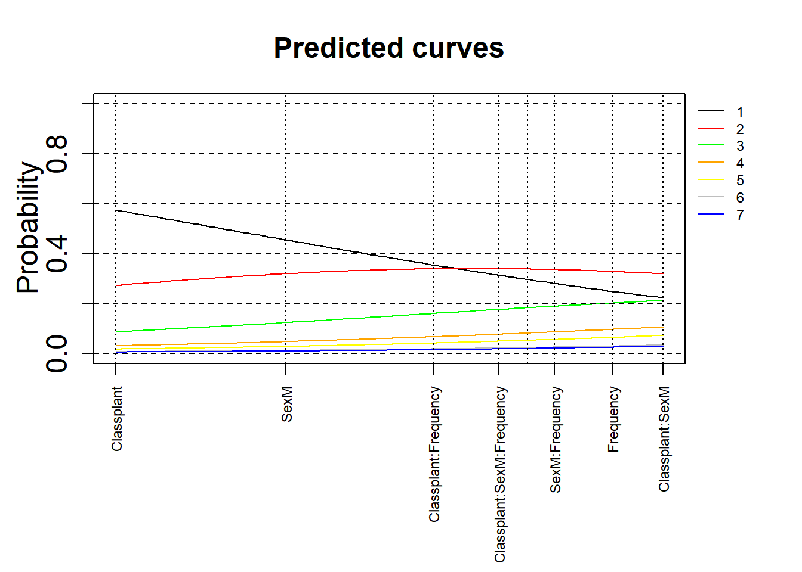
3.3.1.2.3 Subject by Age
This figure shows that subjects had an impact on the LookingTime in both age groups, simply due to their variable responses to the different items
dataCong %>%
ggplot(aes(x = Age,
y = LookingTime,
colour = Subj)) +
theme_bw() +
geom_point() +
geom_smooth(aes(as.numeric(Cond)), method = "lm", se = FALSE) +
scale_colour_manual(values = paletteer_c("grDevices::rainbow", length(unique(dataCong$Subj))))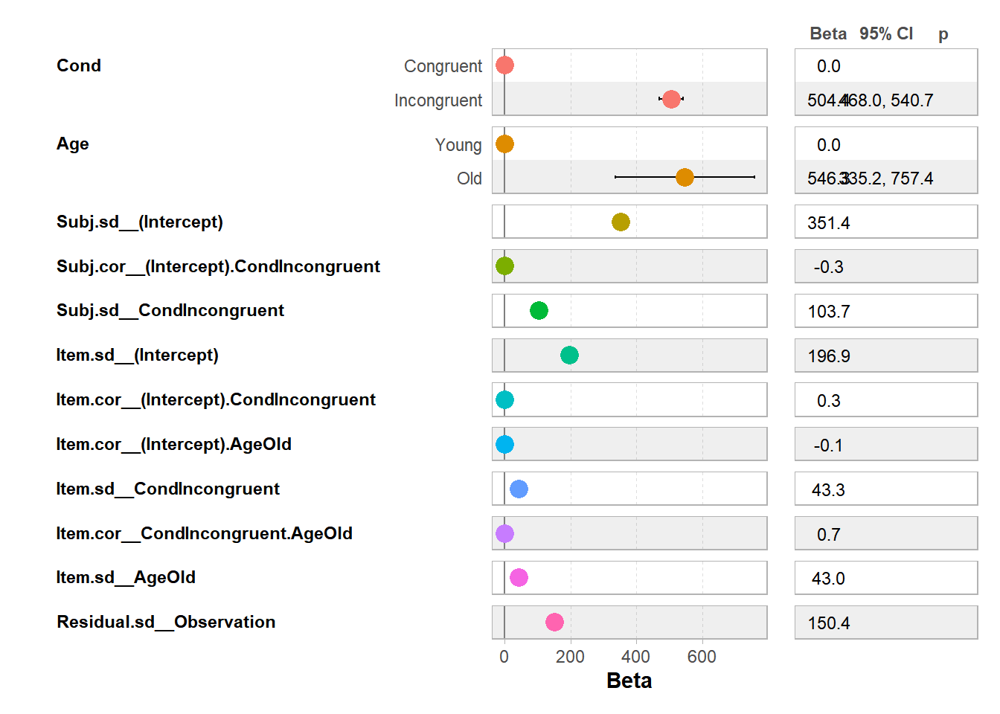
3.3.1.2.4 Item by Condition
This figure shows that items had an impact on the LookingTime in both conditions
dataCong %>%
ggplot(aes(x = Cond,
y = LookingTime,
colour = Item)) +
theme_bw() +
geom_point() +
geom_smooth(aes(as.numeric(Cond)), method = "lm", se = FALSE) +
scale_colour_manual(values = paletteer_c("grDevices::rainbow", length(unique(dataCong$Item))))
3.3.1.2.5 Subject by Age
This figure shows that items had an impact on the LookingTime in both age groups
dataCong %>%
ggplot(aes(x = Age,
y = LookingTime,
colour = Item)) +
theme_bw() +
geom_point() +
geom_smooth(aes(as.numeric(Cond)), method = "lm", se = FALSE) +
scale_colour_manual(values = paletteer_c("grDevices::rainbow", length(unique(dataCong$Item))))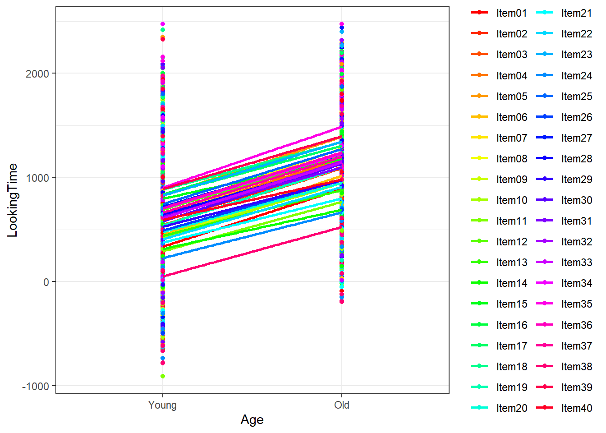
3.3.2 Modelling strategy
We use an LMER model with a crossed random effect. To choose our optimal model, we start first by a simple model with only random intercepts, increasing complexity by accounting for random slopes for both subjects and items. It is clear from our visualisation above, that there is no interaction between the two predictors. However, for demonstration purposes, we do test for this
3.3.2.1 Simple Linear Model
##
## Call:
## lm(formula = LookingTime ~ Cond + Age, data = .)
##
## Residuals:
## Min 1Q Median 3Q Max
## -1215.59 -290.17 -21.78 264.89 1661.41
##
## Coefficients:
## Estimate Std. Error t value Pr(>|t|)
## (Intercept) 304.95 12.91 23.61 <2e-16 ***
## CondIncongruent 504.35 14.91 33.82 <2e-16 ***
## AgeOld 566.44 14.91 37.98 <2e-16 ***
## ---
## Signif. codes: 0 '***' 0.001 '**' 0.01 '*' 0.05 '.' 0.1 ' ' 1
##
## Residual standard error: 421.8 on 3197 degrees of freedom
## Multiple R-squared: 0.4472, Adjusted R-squared: 0.4469
## F-statistic: 1293 on 2 and 3197 DF, p-value: < 2.2e-16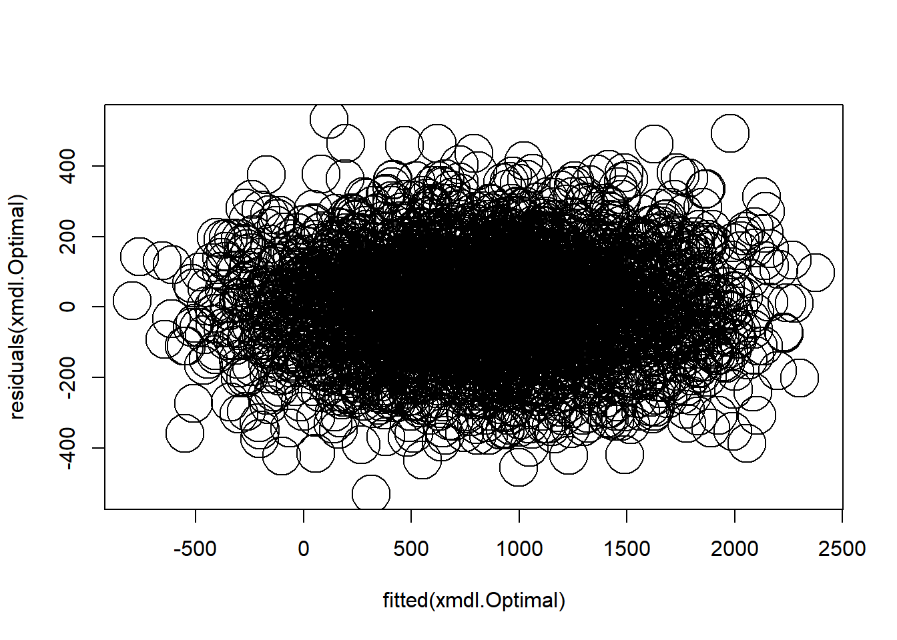
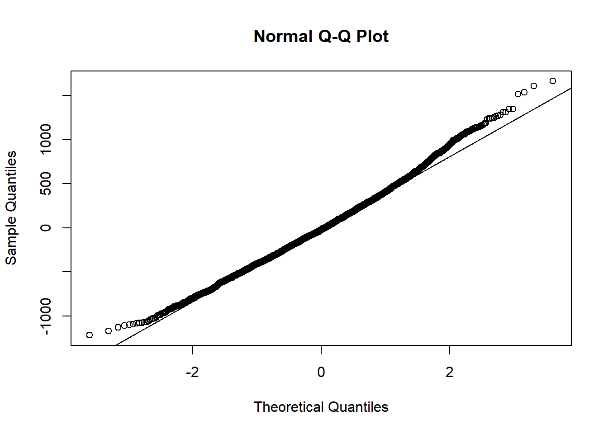
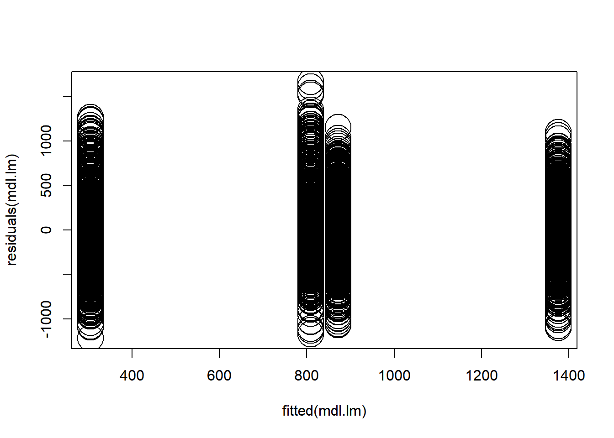
3.3.2.2 No interaction
3.3.2.3 With interaction
3.3.2.4 Model comparison
anova(xmdl.rand.Interc, xmdl.rand.Slope1, xmdl.rand.Slope2, xmdl.rand.Slope3, xmdl.rand.Interc.Int, xmdl.rand.Slope1.Int, xmdl.rand.Slope2.Int, xmdl.rand.Slope3.Int)## Data: .
## Models:
## xmdl.rand.Interc: LookingTime ~ Cond + Age + (1 | Subj) + (1 | Item)
## xmdl.rand.Interc.Int: LookingTime ~ Cond * Age + (1 | Subj) + (1 | Item)
## xmdl.rand.Slope1: LookingTime ~ Cond + Age + (1 + Cond | Subj) + (1 | Item)
## xmdl.rand.Slope1.Int: LookingTime ~ Cond * Age + (1 + Cond | Subj) + (1 | Item)
## xmdl.rand.Slope2: LookingTime ~ Cond + Age + (1 + Cond | Subj) + (1 + Cond | Item)
## xmdl.rand.Slope2.Int: LookingTime ~ Cond * Age + (1 + Cond | Subj) + (1 + Cond | Item)
## xmdl.rand.Slope3: LookingTime ~ Cond + Age + (1 + Cond | Subj) + (1 + Cond + Age | Item)
## xmdl.rand.Slope3.Int: LookingTime ~ Cond * Age + (1 + Cond | Subj) + (1 + Cond * Age | Item)
## npar AIC BIC logLik -2*log(L) Chisq Df Pr(>Chisq)
## xmdl.rand.Interc 6 42074 42110 -21031 42062
## xmdl.rand.Interc.Int 7 42050 42093 -21018 42036 25.8359 1 3.717e-07
## xmdl.rand.Slope1 8 41834 41883 -20909 41818 217.8699 1 < 2.2e-16
## xmdl.rand.Slope1.Int 9 41833 41888 -20908 41815 3.0247 1 0.0820
## xmdl.rand.Slope2 10 41808 41869 -20894 41788 27.3253 1 1.719e-07
## xmdl.rand.Slope2.Int 11 41807 41874 -20892 41785 3.0149 1 0.0825
## xmdl.rand.Slope3 13 41780 41858 -20877 41754 31.2599 2 1.629e-07
## xmdl.rand.Slope3.Int 18 41786 41895 -20875 41750 3.3401 5 0.6477
##
## xmdl.rand.Interc
## xmdl.rand.Interc.Int ***
## xmdl.rand.Slope1 ***
## xmdl.rand.Slope1.Int .
## xmdl.rand.Slope2 ***
## xmdl.rand.Slope2.Int .
## xmdl.rand.Slope3 ***
## xmdl.rand.Slope3.Int
## ---
## Signif. codes: 0 '***' 0.001 '**' 0.01 '*' 0.05 '.' 0.1 ' ' 1The results above highlight that the model accounting for both by-subject and by-item random intercepts and random slopes for Condition are improving the model fit in comparison to a more complex model. We rerun the model with REML = False
3.3.2.5 Optimal model
xmdl.Optimal <- dataCong %>%
lmer(LookingTime ~ Cond + Age +
(1 + Cond | Subj) +
(1 + Cond + Age | Item), data = ., REML = TRUE,
control = lmerControl(optimizer = "bobyqa", optCtrl = list(maxfun = 1e5)))

3.3.2.5.2 Summary
## Linear mixed model fit by REML ['lmerMod']
## Formula: LookingTime ~ Cond + Age + (1 + Cond | Subj) + (1 + Cond + Age |
## Item)
## Data: .
## Control: lmerControl(optimizer = "bobyqa", optCtrl = list(maxfun = 1e+05))
##
## REML criterion at convergence: 41724.6
##
## Scaled residuals:
## Min 1Q Median 3Q Max
## -3.5337 -0.6485 -0.0054 0.6647 3.5358
##
## Random effects:
## Groups Name Variance Std.Dev. Corr
## Subj (Intercept) 123480 351.40
## CondIncongruent 10746 103.66 -0.26
## Item (Intercept) 38781 196.93
## CondIncongruent 1872 43.27 0.31
## AgeOld 1851 43.03 -0.13 0.69
## Residual 22613 150.38
## Number of obs: 3200, groups: Subj, 40; Item, 40
##
## Fixed effects:
## Estimate Std. Error t value
## (Intercept) 315.04 83.42 3.777
## CondIncongruent 504.35 18.54 27.204
## AgeOld 546.28 107.70 5.072
##
## Correlation of Fixed Effects:
## (Intr) CndInc
## CndIncngrnt -0.120
## AgeOld -0.646 0.0163.3.2.5.3 ANOVA
## Analysis of Deviance Table (Type II Wald chisquare tests)
##
## Response: LookingTime
## Chisq Df Pr(>Chisq)
## Cond 740.067 1 < 2.2e-16 ***
## Age 25.729 1 3.928e-07 ***
## ---
## Signif. codes: 0 '***' 0.001 '**' 0.01 '*' 0.05 '.' 0.1 ' ' 13.3.2.5.4 Model’s fit
print(tab_model(xmdl.Optimal, file = paste0("outputs/xmdl.Optimal.html")))
htmltools::includeHTML("outputs/xmdl.Optimal.html")| Looking Time | |||
|---|---|---|---|
| Predictors | Estimates | CI | p |
| (Intercept) | 315.04 | 151.48 – 478.60 | <0.001 |
| Cond [Incongruent] | 504.35 | 468.00 – 540.70 | <0.001 |
| Age [Old] | 546.28 | 335.12 – 757.44 | <0.001 |
| Random Effects | |||
| σ2 | 22612.64 | ||
| τ00 Subj | 123480.29 | ||
| τ00 Item | 38780.86 | ||
| τ11 Subj.CondIncongruent | 10745.65 | ||
| τ11 Item.CondIncongruent | 1872.30 | ||
| τ11 Item.AgeOld | 1851.23 | ||
| ρ01 Subj | -0.26 | ||
| ρ01 Item.CondIncongruent | 0.31 | ||
| ρ01 Item.AgeOld | -0.13 | ||
| ICC | 0.88 | ||
| N Subj | 40 | ||
| N Item | 40 | ||
| Observations | 3200 | ||
| Marginal R2 / Conditional R2 | 0.428 / 0.930 | ||
3.3.3 Plotting model’s output

3.3.3.3 With ggstatsplot
ggcoefstats(xmdl.Optimal, point.args = list(color = paletteer_c("grDevices::rainbow", 13), stats.label.color = paletteer_c("grDevices::rainbow", 13)))## Warning in (function (mapping = NULL, data = NULL, stat = "identity", position
## = "identity", : Ignoring unknown parameters: `stats.label.colour`## Number of labels is greater than default palette color count.
## • Select another color `palette` (and/or `package`).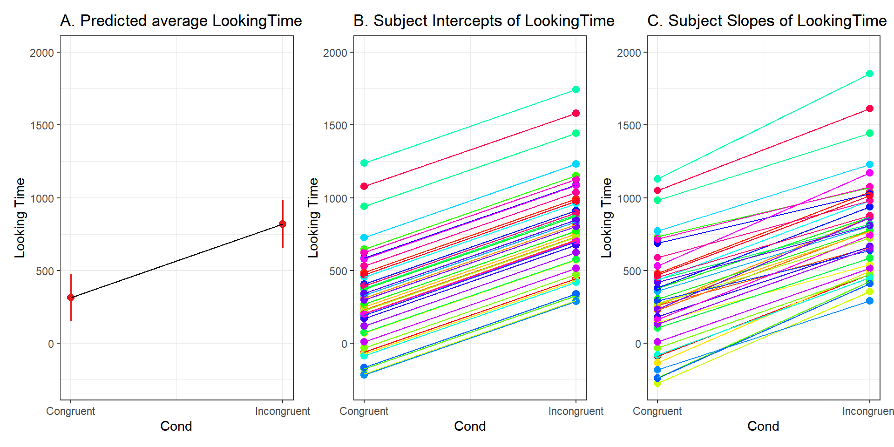
3.3.4 Exploring random effects
3.3.4.1 Subject random effects
random_effects <- ranef(xmdl.Optimal) %>%
pluck(1) %>%
rownames_to_column() %>%
rename(Subject = rowname, Intercept = "(Intercept)")
random_effects %>%
knitr::kable()| Subject | Intercept | CondIncongruent |
|---|---|---|
| Subj01 | -404.45054 | 58.1953368 |
| Subj02 | 164.05584 | 56.9126271 |
| Subj03 | -56.37438 | -104.0600477 |
| Subj04 | -87.06837 | 43.7884729 |
| Subj05 | -55.65214 | 104.5323900 |
| Subj06 | -42.39999 | -7.1394328 |
| Subj07 | -448.81496 | 124.6524549 |
| Subj08 | -171.75810 | -105.4504187 |
| Subj09 | -587.74594 | 123.6911001 |
| Subj10 | -44.50407 | -50.9618431 |
| Subj11 | -346.46288 | 1.6396966 |
| Subj12 | -550.49633 | 158.6524706 |
| Subj13 | 417.66027 | -169.1409700 |
| Subj14 | -11.45716 | -30.0008252 |
| Subj15 | 62.46659 | -14.3520076 |
| Subj16 | -210.03389 | -23.9077430 |
| Subj17 | 124.19946 | -122.7635167 |
| Subj18 | 666.67147 | -42.1836697 |
| Subj19 | 815.78333 | 217.1615447 |
| Subj20 | -393.58521 | 26.1633665 |
| Subj21 | 120.64645 | 37.9297097 |
| Subj22 | 455.31816 | -46.4925696 |
| Subj23 | 42.42431 | -54.4053551 |
| Subj24 | -496.29436 | -31.7202386 |
| Subj25 | -552.91357 | 144.2714898 |
| Subj26 | -21.91509 | -159.7897817 |
| Subj27 | 65.14521 | 54.5212747 |
| Subj28 | 373.40089 | -166.0862255 |
| Subj29 | -132.82108 | -21.8820276 |
| Subj30 | 104.73419 | -112.8914459 |
| Subj31 | -79.72260 | 125.0118699 |
| Subj32 | -182.30982 | 15.3898936 |
| Subj33 | -303.68384 | -0.1957386 |
| Subj34 | 215.98609 | 136.5078869 |
| Subj35 | -152.60397 | 76.5559812 |
| Subj36 | 401.50547 | -145.0045141 |
| Subj37 | 274.61818 | -114.4122298 |
| Subj38 | 139.48473 | -82.7958618 |
| Subj39 | 733.87830 | 58.5575032 |
| Subj40 | 155.08935 | 41.5013939 |
3.3.4.2 Items random effects
random_effects <- ranef(xmdl.Optimal) %>%
pluck(2) %>%
rownames_to_column() %>%
rename(Items = rowname, Intercept = "(Intercept)")
random_effects %>%
knitr::kable()| Items | Intercept | CondIncongruent | AgeOld |
|---|---|---|---|
| Item01 | -247.414507 | 16.2991489 | 28.312990 |
| Item02 | -28.240445 | 20.6149279 | 37.267856 |
| Item03 | -27.548429 | 11.7099339 | -3.218254 |
| Item04 | 30.999046 | 32.2392558 | 32.548236 |
| Item05 | 246.216859 | 38.0585978 | 2.963549 |
| Item06 | -135.583736 | 28.3151555 | 28.127356 |
| Item07 | 75.461498 | 28.6715548 | -2.095288 |
| Item08 | 72.679400 | 69.1730999 | 73.479523 |
| Item09 | -180.071444 | 32.9237845 | 60.953057 |
| Item10 | -170.029328 | 8.4112590 | 23.865843 |
| Item11 | -278.857705 | -39.6392919 | -22.526611 |
| Item12 | 114.001985 | 4.7652485 | -15.353357 |
| Item13 | -137.533542 | -49.5701246 | -36.764423 |
| Item14 | -272.928912 | -85.2576750 | -45.340742 |
| Item15 | 219.855541 | -70.2475223 | -83.121735 |
| Item16 | 243.071753 | 13.0287924 | -4.812872 |
| Item17 | 210.792625 | 10.6898312 | 17.840004 |
| Item18 | 328.737750 | -36.9498461 | -82.922663 |
| Item19 | -46.910049 | 28.2829527 | 22.930110 |
| Item20 | -107.870056 | -25.5384308 | -13.846115 |
| Item21 | -209.598744 | -56.8339801 | -29.482588 |
| Item22 | -190.253581 | -3.0439700 | 20.502593 |
| Item23 | 207.958662 | 34.4328035 | 33.373202 |
| Item24 | -371.211245 | -46.1955836 | 1.751542 |
| Item25 | 163.603914 | 15.0837752 | -7.780876 |
| Item26 | -56.954235 | -39.1972201 | -59.652416 |
| Item27 | 126.648406 | 7.5867262 | -1.102683 |
| Item28 | 48.176096 | -0.4969082 | 1.358911 |
| Item29 | -76.699978 | -27.4397677 | -1.462473 |
| Item30 | -20.393146 | 33.1813806 | 36.286219 |
| Item31 | 33.763413 | -15.9993987 | -14.400133 |
| Item32 | -15.979008 | 47.9237115 | 67.643383 |
| Item33 | 64.451213 | -8.2252951 | -47.157817 |
| Item34 | 102.286457 | 22.6554454 | 17.134672 |
| Item35 | 319.882212 | 54.1470278 | 10.485257 |
| Item36 | 115.886689 | 22.7596669 | 9.094458 |
| Item37 | 93.471368 | 9.1514824 | -17.490313 |
| Item38 | -523.293815 | -46.1545897 | -5.185309 |
| Item39 | 287.858945 | 20.0462752 | 2.292928 |
| Item40 | -8.431927 | -59.3622338 | -34.495018 |
3.3.4.3 Plots
These plots below are produced with the sjPlot package.
3.3.4.3.1 Fixed effects
3.3.4.3.1.1 Condition
plot_model(xmdl.Optimal, type="pred", terms=c("Cond"), ci.lvl = NA, dodge = 0) + theme_bw() + geom_line()


3.3.4.3.2 Random effects
3.3.4.3.2.1 Subject
plot_model(xmdl.Optimal, type="pred", terms=c("Subj"), pred.type="re", ci.lvl = NA, dodge = 0) + theme_bw() + geom_line()
3.3.4.3.2.2 Subject by Condition
plot_model(xmdl.Optimal, type="pred", terms=c("Cond", "Subj"), pred.type="re", ci.lvl = NA, dodge = 0, colors = paletteer_c("grDevices::rainbow", length(unique(dataCong$Subj)))) + theme_bw() + geom_line() 
3.3.4.3.2.3 Subject by Age
plot_model(xmdl.Optimal, type="pred", terms=c("Age", "Subj"), pred.type="re", ci.lvl = NA, dodge = 0, colors = paletteer_c("grDevices::rainbow", length(unique(dataCong$Subj)))) + theme_bw() + geom_line()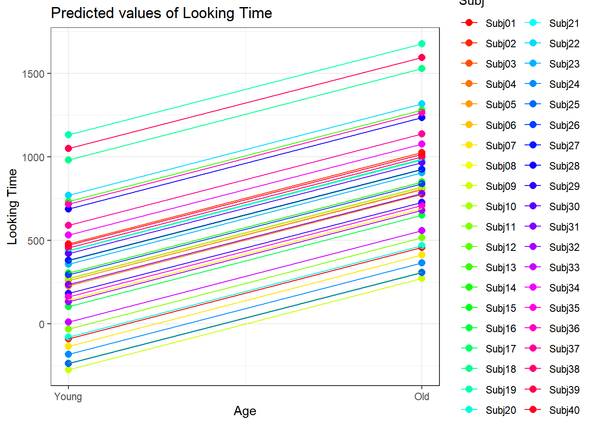
3.3.4.3.2.4 Item
plot_model(xmdl.Optimal, type="pred", terms=c("Item"), pred.type="re", ci.lvl = NA, dodge = 0) + theme_bw() + geom_line()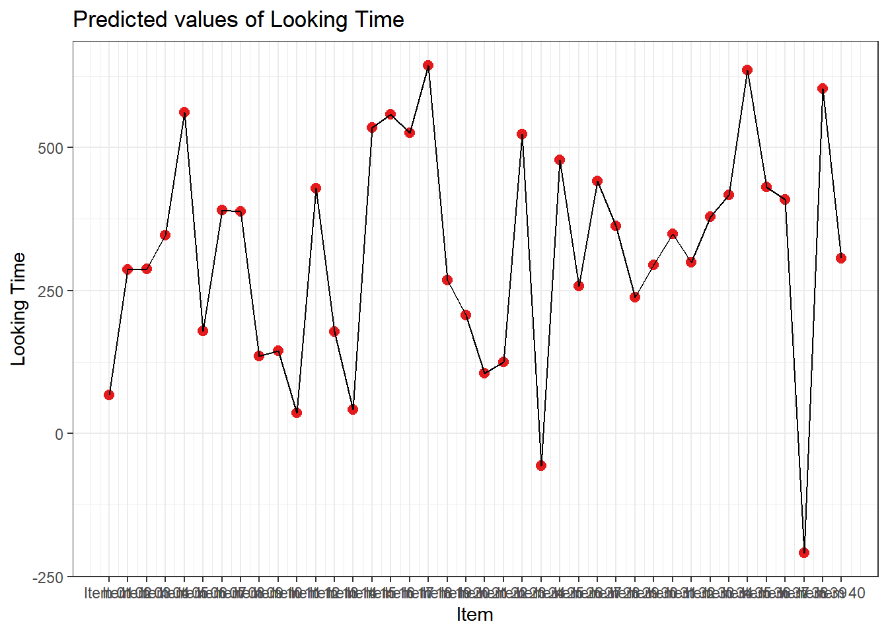
3.3.4.3.2.5 Item by Cond
plot_model(xmdl.Optimal, type="pred", terms=c("Cond", "Item"), pred.type="re", ci.lvl = NA, dodge = 0, colors = paletteer_c("grDevices::rainbow", length(unique(dataCong$Item)))) + theme_bw() + geom_line()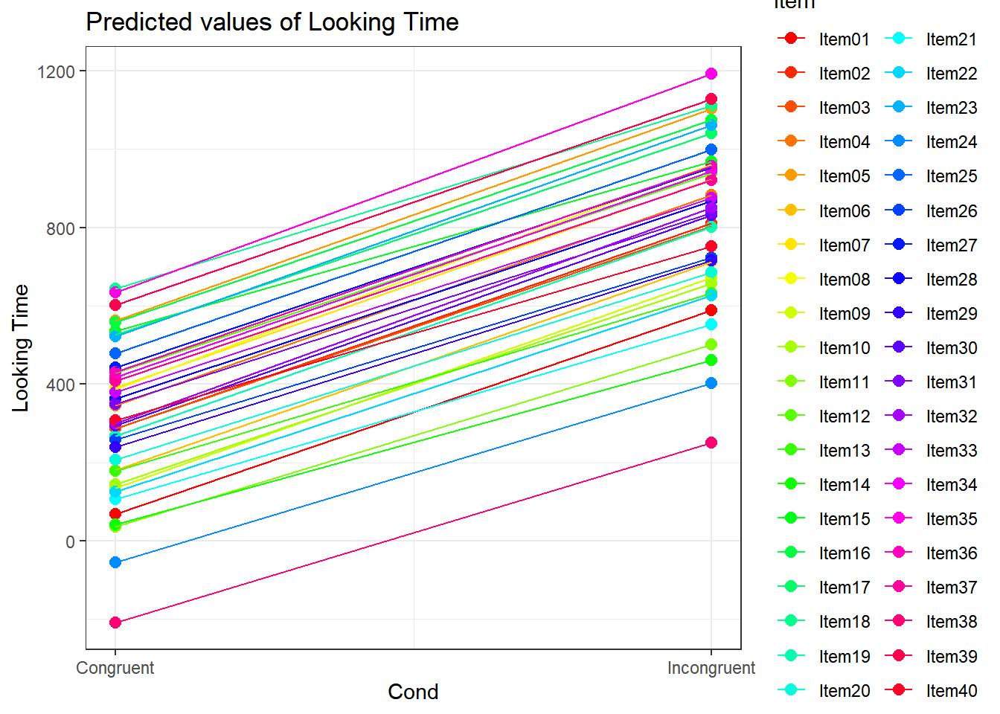
3.3.4.3.2.6 Item by Age
plot_model(xmdl.Optimal, type="pred", terms=c("Age", "Item"), pred.type="re", ci.lvl = NA, dodge = 0, colors = paletteer_c("grDevices::rainbow", length(unique(dataCong$Item)))) + theme_bw() + geom_line()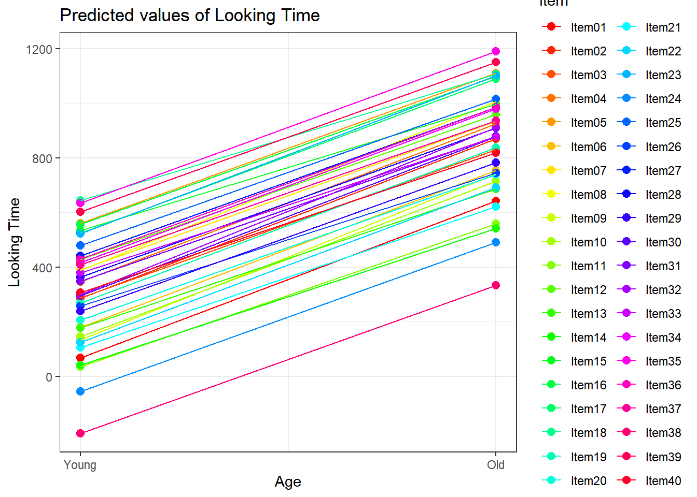
3.3.4.3.2.7 Item by Cond facetted by Age
plot_model(xmdl.Optimal, type="pred", terms=c("Cond", "Item", "Age"), pred.type="re", ci.lvl = NA, dodge = 0, colors = paletteer_c("grDevices::rainbow", length(unique(dataCong$Item)))) + theme_bw() + geom_line()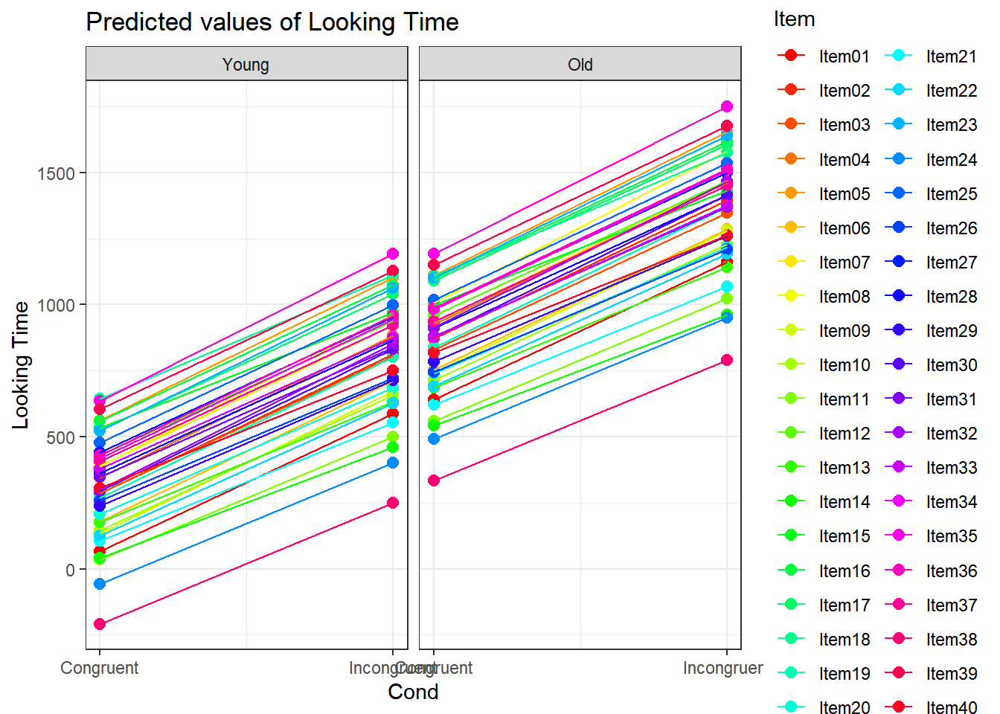
3.3.4.3.2.8 Subject by Item
plot_model(xmdl.Optimal, type="pred", terms=c("Subj", "Item"), pred.type="re", ci.lvl = NA, dodge = 0, colors = paletteer_c("grDevices::rainbow", length(unique(dataCong$Subj)))) + theme_bw() + geom_line()

3.3.5 Conclusion
In this simulated dataset, we showed how to use Linear Mixed-effects Models, and used a specific approach, named “maximal specification model”. This maximal specification model uses both random intercepts and random slopes. Usually, on any dataset, you are required to formally assess the need for Random slopes.
As a rule of thumb: Any within-subject (or within-item) should be tested for a potential inclusion as a random slope.
Fixed effects provide averages over all observations, even when using mixed effects regressions; we need to explore what random effects (intercepts and slopes) tell us.
In this example, we see that many subjects vary beyond the fixed effect; Standard Errors are not enough to quantify this type of variation. The same is true for items that are not explored routinely!
The approach above used a maximal specification model. This of course depends on the dataset you are working on and requires formal testing. See the package RePsychLing that is on github. The function RePCA is part of the package lme4. You can use it to verify if the model structure is appropriate. However, lme4 will give you directly a warning “is singular” that you can interpret as “over specified model”.